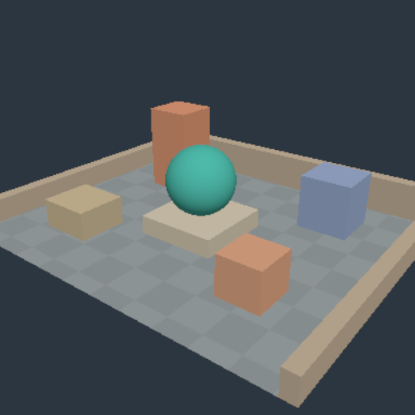

002 · 内部解像度 100 / 75 / 50%
結果の要点
表示寸法を 512×512 に固定し、内部寸法が 512×512、384×384、256×256 の描画を比較しました。中庭・解析球・色の3実験で、計9画像を GPU API から readback しました。全条件で、画像の不透明性、構図、上下方向、素材色、sRGB 変換の検査に成功しました。
50% では箱・球・外周の輪郭に段差とぼやけが見えます。大きな面の色と全体の構図は保たれますが、75% にも輪郭の差があります。これは固定シーン・512×512・t=0 での観察であり、視覚品質を一般に保証する合否基準ではありません。
低コントラストの大きな面には向く一方、小さな輪郭や斜線が重要な用途では 50% の差が目立ちます。文字・極細線・高周波テクスチャ・時間方向のちらつきは未検証です。これらの品質が崩れる閾値を測定したとは主張しません。
比較画像
すべて同じ表示実寸の画像です。共有する WGSL・メッシュ・pipeline builder・upsampler を使い、ネイティブ環境でオフスクリーン描画を readback しました。ブラウザーのスクリーンショットではありません。
- 3条件の横並び画像
- 100% は内部 512×512 から表示 512×512 へ出力します。

- 75% は内部 384×384 から表示 512×512 へ出力します。

- 50% は内部 256×256 から表示 512×512 へ出力します。


方法・再現条件
ベースソースは fcbd6ec4a70e9a1022894d4bc673bea6e4cdaffc に、この実験の変更を加えたものです。公開時の実際の source commit は demo/build-info.json に記録します。今回検証した変更済みツリーのソース snapshot SHA256 一覧を保存しており、base commit だけを新実装の検証対象とは扱いません。
実行環境は Rust 1.99.0、wgpu 30.0.1、Mesa 25.0.7、llvmpipe LLVM 19.1.7、GL、device type CPU です。実機のハードウェア GPU ではありません。カメラを固定し、t=0 で同じ WGSL とメッシュを使います。各条件の描画対象は 1 scene で、viewport は 512×512 です。ブラウザーでの 2 slot 同時描画とは負荷の構成が違います。
内部寸法は、表示 viewport の各辺に scale を掛けて整数に四捨五入し、最小値を1にします。75% は各辺の比率を表し、ピクセル数は 56.25% です。50% のピクセル数は 25% になります。
全倍率で、独立した color と Depth32Float に描画します。その後、共通の fullscreen triangle による bilinear clamp で表示寸法へ拡大します。100% にも同じ表示パスがあります。color の形式は Rgba8UnormSrgb です。sampling 時に linear へ decode して補間し、出力 attachment で一度 encode します。追加の gamma 補正は行いません。
各条件で 10 frame の warmup 後に 30 frame を測定し、3 repeat 実行します。生サンプル数は 3 scene × 3 scale × 3 repeat × 30 = 810 です。各 repeat の warmup は CSV から除外します。実行順は scene ごとに 100→75→50 で、ランダム化はしていません。温度、他プロセスの負荷、CPU スケジューリングも統制していません。
再実行時は、出力先を絶対パスで指定します。
RENDERING_LAB_SCALE_OUTPUT="$PWD/evidence/native-scale" cargo test --locked -p rendering-core --test scale_smoke -- --ignored --nocaptureレポート画像・集計の再生成
ネイティブテストが生成した9枚の 512×512 PPM、810行の生 CSV、metadata.json から生成します。Python 3 と Pillow が必要です。入力の相対パスはリポジトリのルートを基準にするため、カレントディレクトリには依存しません。
python3 scripts/build-scale-evidence.py --input evidence/native-scale
python3 scripts/build-scale-evidence.py --check生成スクリプトは scene × scale の9条件、各 3 repeat × 30 sample、表示・内部寸法、重複や欠落、有限でない計測時間の有無を検証します。その後、9枚の可逆圧縮 PNG、1536×550 のラベル付き中庭比較画像、生 CSV と metadata のコピー、27行の集計を作成します。
集計には通常の中央値と nearest-rank p95 を使います。偶数点の中央値は中央2値の平均とし、結果は6桁に丸めて末尾のゼロを省略します。既存の集計は入力に使いません。
--check は一時ディレクトリで再生成し、再生成対象の13ファイルとバイト単位で比較します。別途保存した実行時の runs/source-snapshot.json は形式のみ検証し、再生成も上書きもしません。画像のエンコードを再現するには、同じ Pillow/zlib 環境を使います。画像や生計測を捏造したり、再計測したりするコマンドではありません。
計測結果と限界
生 CSV、repeat 別の集計 CSV、条件・画質差 JSONを保存しました。各 repeat の30点について、中央値と nearest-rank p95 を集計しています。偶数点の中央値は中央2値の平均です。
中庭の90点をまとめた native completion wall の中央値は、100%=1.516ms、75%=1.449ms、50%=1.353ms でした。この実行では、全サンプルをまとめた pooled 中央値は低下しました。ただし、75% の repeat 別中央値は 1.414〜1.642ms とばらつき、100% の 1.470〜1.554ms と重なります。ピクセル数に比例した高速化や、反復ごとの単調な改善は示されていません。
これらは CPU のソフトウェアラスタライザーで encode/submit を呼び、queue の完了まで処理を止めて待った実経過時間です。GPU timestamp でも、ブラウザーのフレーム間隔でもありません。値の差には、固定の追加パス、CPU/driver のオーバーヘッド、queue の待機、スケジューリング、実行順の影響が含まれる可能性があります。専用 GPU や Android Chrome の結果には外挿しません。
CSV には cpu_encode_submit_ms、native_queue_wait_ms、その合計の native_queue_completion_wall_ms を分けて記録します。readback・画像保存・texture の確保・pipeline の作成は計測から除外しています。GPU 時間・vsync・present・rAF は測っていません。
中庭の 100% に対する全画像の RGB byte-channel MAE は、75%=0.412609、50%=0.654121 です。背景が大きいため、全画像の平均では輪郭の劣化を過小評価します。MAE が小さいことを、知覚的に同等であるという意味には扱いません。
Webで使えるもの・未確認部分
A/B ごとに倍率を設定でき、内部・表示実寸と、同じ中庭を固定条件で比較する preset を用意しています。source/draft は勝手に上書きしません。計測 CSV/JSON には display canvas の実寸、slot viewport、内部実寸、scale、WGSL、時刻、環境を保存します。scale が違えば A/B 比較に分類します。
PNG 名にも倍率を含め、未描画の frame は保存しません。reload・retry・中止・再実行・UI lock は、mock DOM/WASM を使ったテストの対象です。
共有 renderer のネイティブ単体テストと明示的に有効化するテスト、wasm release ビルド、JS テストは成功しました。WebGPU surface、実ブラウザーの操作、Android 実機の新しい倍率 UI、PNG ダウンロード、ブラウザーでの実測は、今回は自己検証していません。初期描画が Android Chrome で動くというユーザー報告はありますが、新しい倍率実験の検証結果とは区別します。
Issue #3 の4つの完了条件は、この固定シーン・ネイティブの llvmpipe 実験の範囲で満たしました。実ブラウザー・モバイル GPU の検証は、Issue #1/#2 と今後のハードウェア追試に残ります。この結果は実機での性能や品質を保証しません。